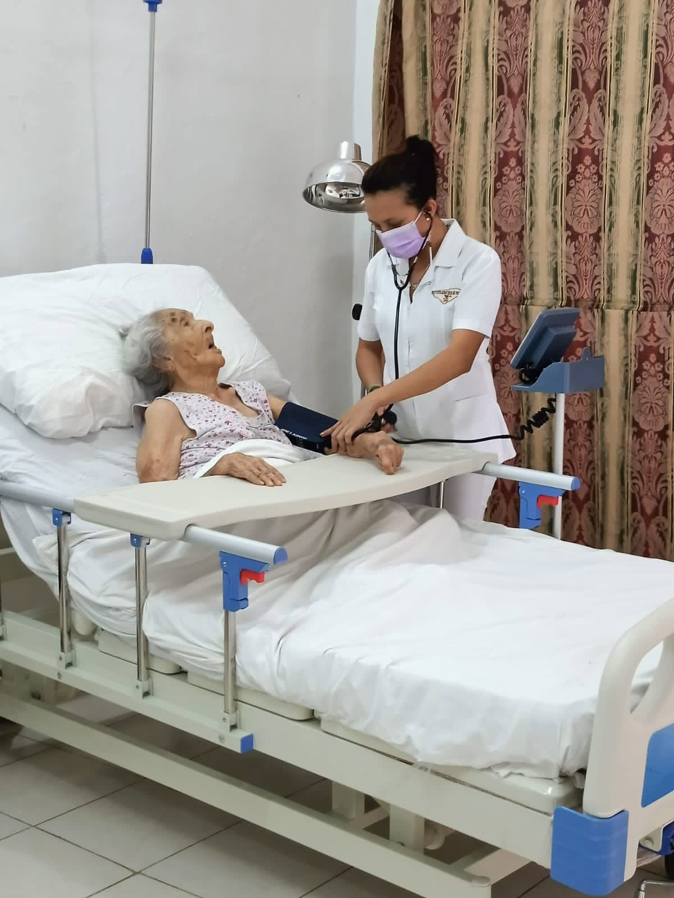
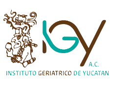
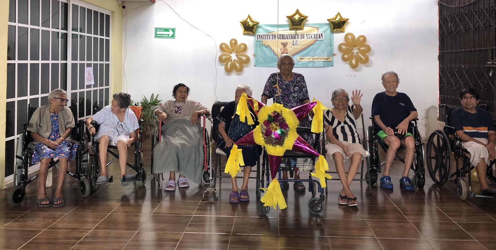
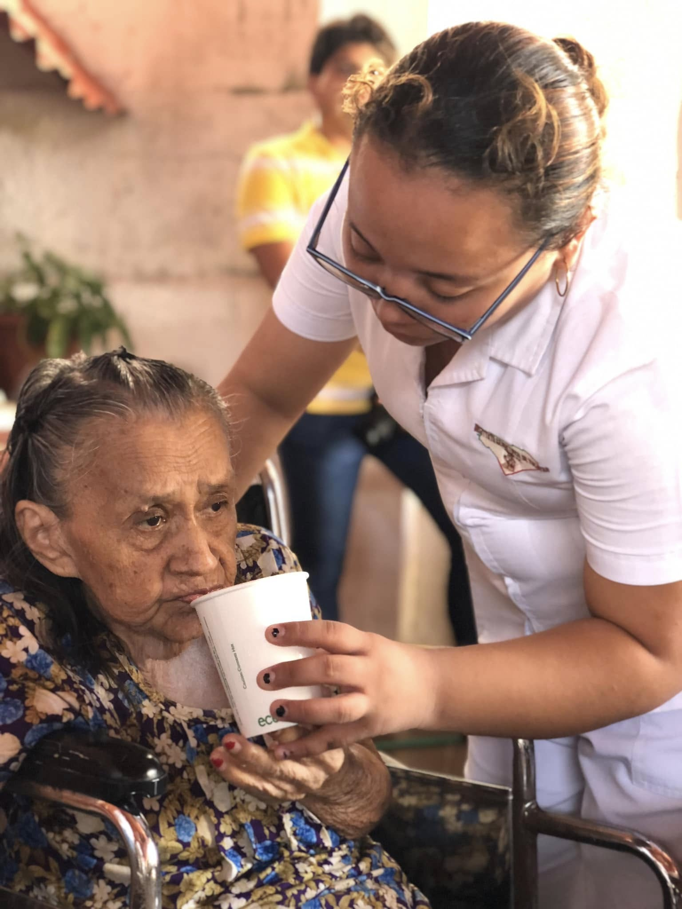
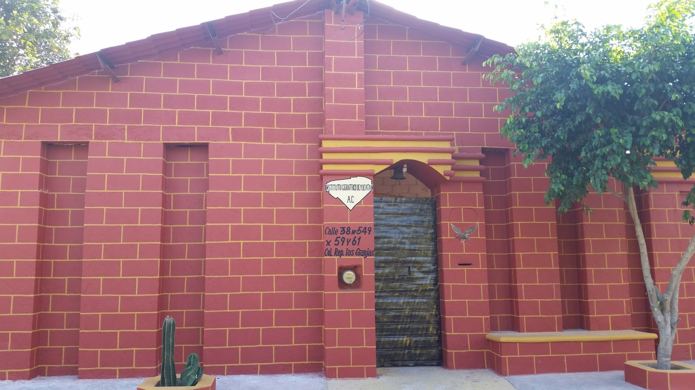
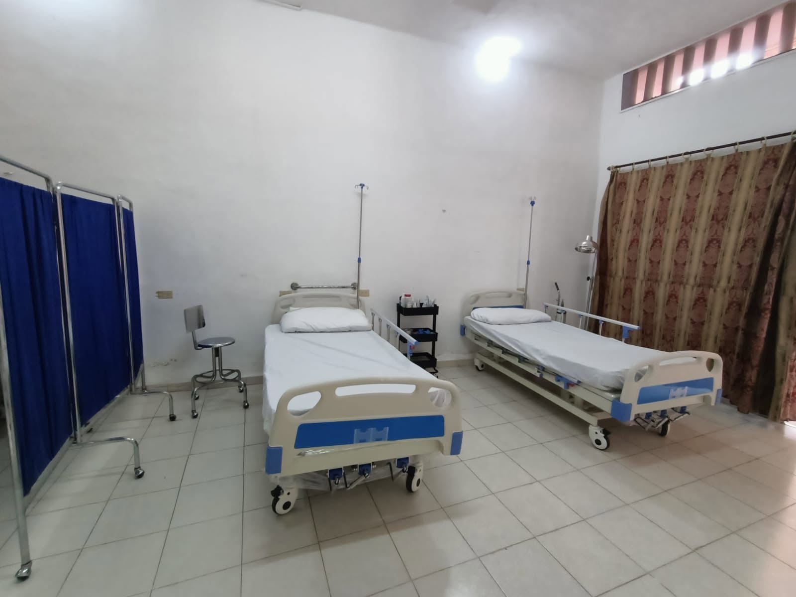
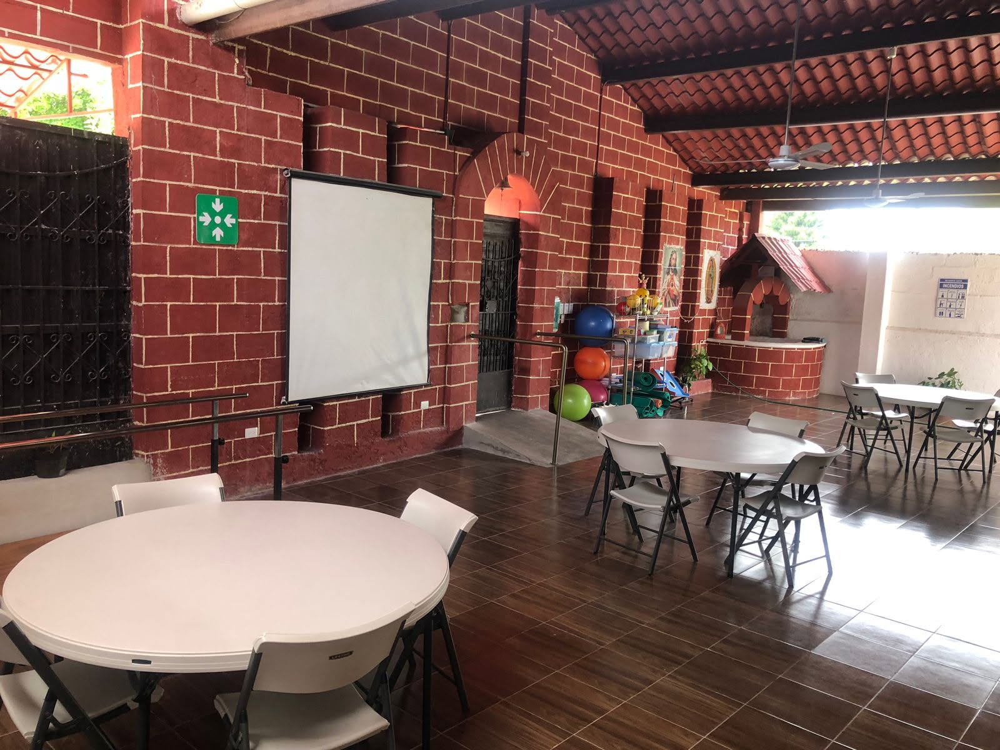
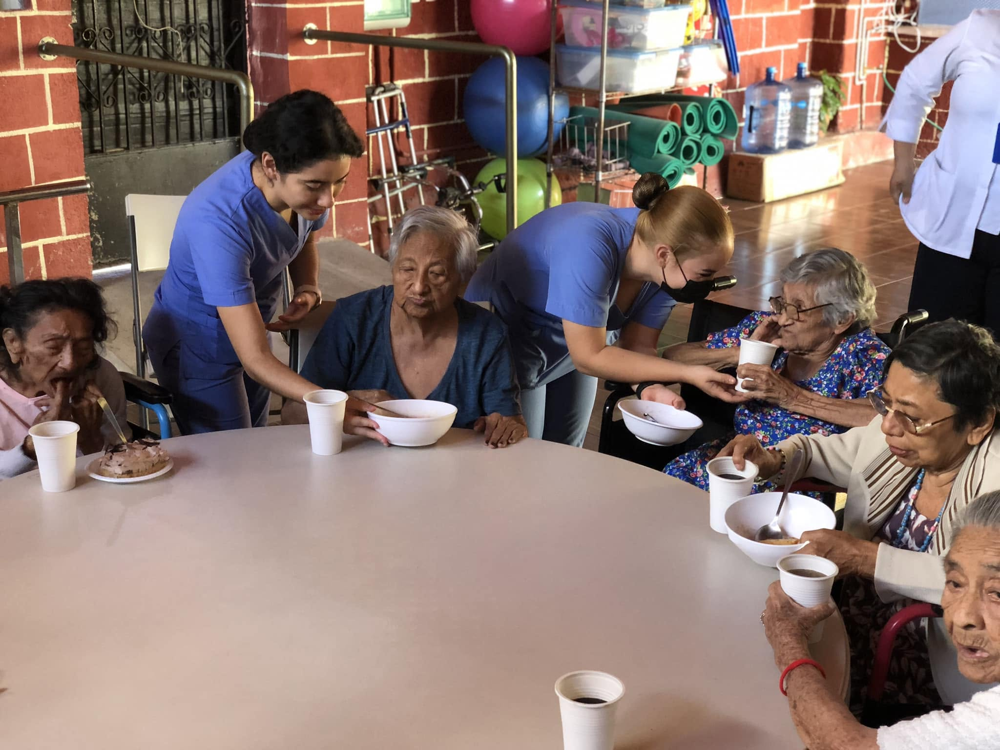

Residencia permanente
Atención y cuidados las 24 horas en un ambiente seguro, cálido y profesional.

Atención geriátrica con calidez humana
Somos una institución altruista sin fines de lucro. Acompañamos a cada persona con atención profesional, espacios pensados para su bienestar y un trato humano para su familia.
Servicios

Atención y cuidados las 24 horas en un ambiente seguro, cálido y profesional.

Cuidados especializados por recuperación, ausencia familiar o necesidad temporal.

Apoyo durante el día con atención integral, alimentación y actividades terapéuticas.
Trato digno al adulto mayor.
Ser una institución líder en el área de geriatría, garantizando confianza y seguridad a pacientes y familiares mediante una atención de calidad.
Respeto, dignidad, calidez, seguridad, responsabilidad y acompañamiento.
Historia
El Instituto Geriátrico de Yucatán A.C. nació de la visión del Dr. Monforte, quien identificó una realidad cada vez más evidente: la población adulta mayor crece constantemente y muchas personas llegan a esta etapa con deterioro cognitivo, discapacidad física o ambas condiciones.
Por ello, el 24 de julio de 2003 abrió sus puertas una institución dedicada a brindar atención integral, especializada y humana a quienes necesitan cuidados profesionales y un trato digno.

Instalaciones

Amplias, ventiladas, con iluminación natural y camas tipo hospital para una mayor seguridad.

Espacio para fisioterapia, terapia recreativa, terapia ocupacional y convivencia.

Área limpia, amplia y ventilada, con alimentos preparados bajo medidas de higiene.
Agenda tu cita
Comparte tu nombre y teléfono. Nuestro equipo se pondrá en contacto contigo para orientarte y coordinar una visita.
Contacto